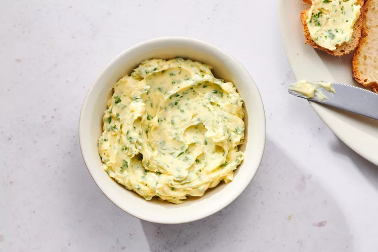

Garlic butter recepie

How to make garlic butter
There are many ways we can make garlic butter. In this recepie we will make it by baking garlic. Baked garlic gives the butter a very good taste.
Ingredients
- Garlic cloves
- Salted butter
- Origano
Steps
- Put garlic cloves onto a aluminum foil. Pour olive oil on it
- Cover the garlic cloves with the aluminum foil and bake it at 350 degree F for 40 minutes
- Take out baked garlic. Smash it with spoon and mix it in butter
- Add little bit of oregano